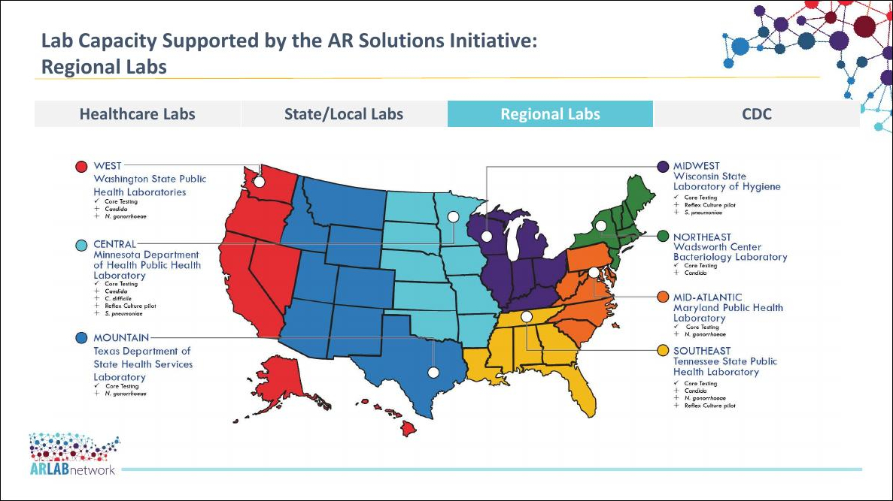
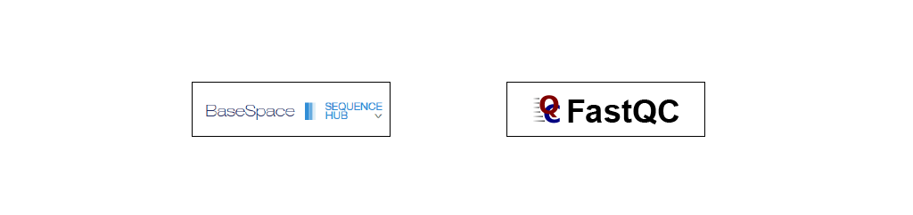

Application of Whole Genome Sequencing to Antibiotic Resistance Surveillance and Outbreak Investigations
Kelsey Florek, MPH, PhD
2019 APHL Annual Meeting
June 04, 2019

Slides available at:
www.k-florek.net/talks
10 cls
20 DIM weight as DOUBLE
30 INPUT "Enter your weight", weight
40 DIM moon as DOUBLE
50 moon = weight / 9.81 * 1.622
60 PRINT "Your weight on the moon is ",moon
APHL - CDC Antimicrobial Resistance Fellowship

Bioinformatics Pipeline

collaborations
- Wisconsin Department of Public Health
- Wisconsin Veterinary Diagnostic Laboratory
- ORegon CHild Absenteeism due to Respiratory Disease Study (ORCHARDS)
- Strategic planning for sequencing and bioinformatics at the State Laboratory
Carbapenem Resistant Acinetobacter baumannii outbreak
Antimicrobial susceptibility
- Amikacin: Resistant
- Aztreonam: Resistant
- Cefepime: Resistant
- Cefotaxime: Resistant
- Ceftazidime: Resistant
- Ciprofloxacin: Resistant
- Colistin: Susceptible
- Doripenem: Resistant
- Doxycycline: Resistant
- Gentamicin: Resistant
- Imipenem: Resistant
- Levofloxacin: Resistant
- Meropenem: Resistant
- Minocycline: Intermediate
- Piperacillin-tazobactam: Resistant
- Polymyxin-B: Susceptible
- Ticarcillin-clavulanate: Resistant
- Tobramycin: Resistant
- Trimethoprim-sulfamethoxazol: Resistant
P-094
Carbapenem-resistant Acinetobacter baumannii Harboring a Plasmid Carrying blaOXA-72 in an Outbreak Involving an Intensive Care Unit and Long-term Care Facilities in Wisconsin
Conclusions
- Chance favors the prepared mind. - Louis Pasteur
- Expand laboratory capacity
- Work in an area I love
Acknowledgements
- Wisconsin State Laboratory of Hygiene
- David Warshauer
- Peter Shult
- Allen Bateman
- Alana Sterkel
- Sara Wagner
- Wisconsin Department of Public Health
- Megan Lasure
- Lina Elbadawi
- Jordan Mason
- Rachel Klos
- Association of Public Health Laboratories
- Nikki Marchan
- Kelly Wroblewski
- Christin Hanigan
special thanks to: